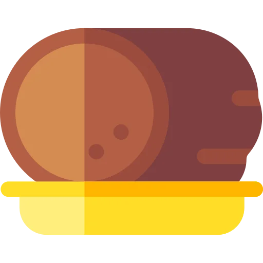

Varied, Nutritious And Tasty Alternatives 
In the traditional diet, meat is considered a source of protein and iron. Fortunately, there are many different plant foods with high amounts of these nutrients. It has been scientifically established by many professional health institutions that a balanced, 100% plant-based diet is good for health at all stages of life.
Alternatives to meat products, such as ready-made imitations, are becoming more and more common in supermarkets and make it possible to replace popular products such as nuggets and to make delicious kebabs, hot dogs, etc.
Finally, plant-based food opens the door to delicious, healthy and unsuspected options, and is much simpler and tastier than we think - vegan cuisine, currently on the rise, is proof of this!
Protein And Iron In A 100% Plant-based Diet? Easy! 
Proteins
By simply eating sufficient quantities according to our appetite, protein intake is guaranteed. Cereals (wheat, oats, rice...), pulses and nuts are common foods that provide us with more than enough protein. Tofu, seitan and hamburgers tofu, seitan and vegan burgers are also rich in protein. Protein deficiency, in fact, is simply a misconception that stems from a lack of information: the only people who are protein deficient in Western countries are those who do not eat enough and have an unbalanced diet. Animal proteins are reputed to be more "complete" than vegetable proteins, but this difference is negligible if you eat a varied diet.
Iron
Legumes, whole grains, tofu and some green vegetables contain comparable amounts of iron to red meat! The haem iron found in meat is usually more easily absorbed than the non-haem iron found in vegetables, but this is not necessarily an advantage, as haem iron is suspected to be one of the causes of health problems caused by red meat, such as increased risk of colorectal cancer. To make the most of the iron in plant foods, accompany them with a food rich in vitamin C: a piece of fruit, a little lemon juice for flavour...
Soybeans
Rich in protein and iron, soya is used in many vegetable recipes and can serve as an alternative to meat in the form of tofu, textured soya protein or vegan hamburger. Soya is one of the most scientifically studied foods, and it has been proven that isoflavones, often called phytoestrogens, have no harmful effect on our hormonal system. Moreover, it has been part of the traditional diet of several Asian countries for thousands of years.
www.infovegana.comTastes and Flavours
There are plant foods and vegan recipes with intense tastes. Some of these foods provide the appreciated "umami" taste, which is similar to that of meat and is part of the five basic tastes along with sweet, bitter, salty and sour.
This taste can enhance the flavour of our recipes. Do not hesitate to use these foods and combine them to give this taste to your dishes!
Descobriu els gustos umami:
The essentials!
- Soy sauce, miso sauce, tamari sauce
- Vegetable stock cubes
- Nutritional yeast
- Garlic, onions, leeks
The classics!
- Tomato concentrate, ketchup, ripe tomatoes
- grape juice, wine (for cooking)
- Balsamic vinegar
The exotics!
- Seaweed: nori, kombu, wakamé
- Mushrooms, especially shiitake
Where Can Meat Alternatives Be Found?
We can find most meat alternatives based on vegetable imitations (nuggets, hamburgers, meatballs, kebabs, sausages, pâté, salami, chicken, etc.) in supermarkets. These products can be found in the fresh produce section, usually in a separate section but sometimes also next to the deli or ready meals section. Among these imitations are Beyond Meat burgers, which imitate the taste of meat to perfection, or Hiedra's "chicken" strips, a real treat!

Organic shops often stock a wide range of vegetable meats, as well as several varieties of tofu and textured soy proteins. Firm or silken tofu can also be found in Asian shops. In addition, more and more restaurants are offering vegetable meats on their menus. Vegan hamburgers can even be found in McDonald's, Burger King, Pans & Company... As for pulses, they can easily be found in supermarkets, organic shops or greengrocers. In organic shops we can find them in different forms: whole or in the form of dried flakes, flour, pasta... Finally, vegan shops are expanding and also offer numerous alternatives to animal products.
Texturised Soya Proteins: All Advantages!
Texturised soya proteins (TSP) are very rich in protein. Like pasta, they are found in dehydrated form. Their subtle taste opens the door to many opportunities, as they are impregnated with the taste of our recipe.
They can be found in the form of small granules, more or less large chunks and even whole burgers. Since their volume is multiplied by 3 when they are hydrated, 25 dry grams are enough for one person to reach enough for one person to get a satisfactory protein intake for a meal. What's more, they are inexpensive!
To hydrate them, leave them in warm or hot water, vegetable stock or soya milk for about 15 minutes. Then simply strain them and add them to your recipe. You can also drain and dry them and then fry them with oil and soy sauce, spices, tomato sauce, etc. We can use them as a substitute for minced meat in any recipe, and they are ideal for preparing bolognese, chilli, sauces...
Vegetable Meats, Ready To Be Cooked! 
Practical and tasty, vegetable meats are usually very rich in protein and are a very interesting source of protein. They are ideal products for when we have little time to cook or when we want to veganise some meals such as barbecue or a meat pie.
Smoked tofu and sausages are ideal for those who want to cook a vegan meal.
Smoked tofu and vegan sausages, cut into small pieces in cakes, quiches or salads, or sautéed with vegetables or rice, provide a smoky flavour reminiscent of cracklings.
Tastes, textures and prices vary from brand to brand; don't hesitate to try a few if you weren't satisfied with the first one.
Tofu, The Endless Variety 
The neutral taste of standard tofu allows it to be used in many different ways and to be included in many savoury and sweet recipes! We are also finding more and more tofu already seasoned, smoked or spiced, tasty and very practical, as it is ready to eat in sandwiches, salads, etc. Firm tofu is very simple and quick to prepare. Simply cut it into cubes or strips of the desired size or roughly mash it and then marinate it in soy sauce, mustard or spices before frying it for a few minutes in a frying pan. Grilled tofu, sautéed, on skewers, vegetables stuffed with tofu, tofu with peppers and tomatoes, tofu sauce with mustard, tofu sauce with soya cream... the only limit to its uses is our imagination!
The silken, soft and creamy tofu can be used in recipes such as cheesecake, cakes, puddings, custards, pastries, etc.
Seitan, Simply Awesome 
It is not for nothing that it is also called "vegetable meat"! Its texture resembles that of meat and allows it to be used as a substitute in many recipes. Many vegetable meats are made from seitan, as its fairly neutral taste allows it to be seasoned and smoked to make very tasty recipes. It is also very rich in protein, as it is made from wheat protein. Traditionally used in Asia for centuries, seitan can nowadays be found in supermarkets in many different forms, and can even be made at home.

(Re)discover Legumes ü´õ
Nutritious, beneficial for our health, inexpensive, varied
Rich in protein, iron and fibre, cheap, nutritious: the health benefits of pulses are numerous and make them a first class food! Red beans, white beans, black beans, kidney beans, broad beans, chickpeas, peas, green lentils, red lentils... hundreds of varieties have been cultivated and eaten for thousands of years, and have given rise to renowned recipes: falafel, hummus, couscous, tempeh, dahl, tacos, etc.
We can easily find pulses in tins or canning jars, ready to eat, perfect for preparing a delicious hummus in just a few minutes.
Chickpea or lentil flours are practical for preparing cakes, blinis or crepes, or for incorporating them into pastries to make cakes or pies. Also in the form of well-digestible flakes, peas, chickpeas and soya can be added to various recipes: soups, vegetable pancakes, gratins... 10 minutes of cooking is enough.
Pastes" based on lentils, chickpeas or peas also exist and are an excellent way of consuming pulses. They can be cooked in 3 minutes and used as normal pasta.

*Based on original content by L214